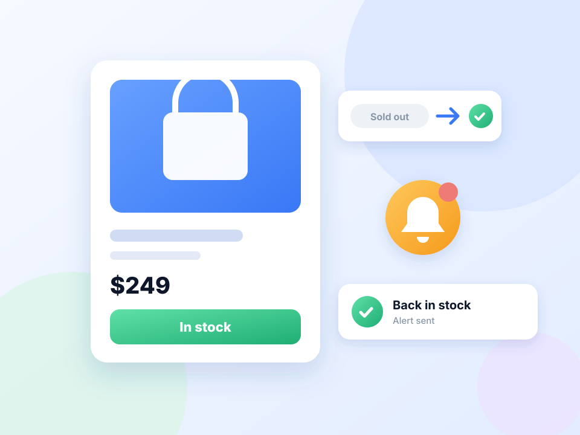

What are you waiting for?
From a restock to a dashboard update, set a page to refresh and get notified when the thing you care about changes. Pick a use case to see a simple set-up.

A few good reasons to automate a tab
These are examples, not limits. If a page changes when it refreshes, Free Auto Refresh can keep an eye on it.
Restock alerts
Leave the product page open.
See the setupPrice changes
Point it at the price on the page.
See the setupTicket drops
Returned and resale tickets appear without warning.
See the setupAppointment availability
Cancellations free up slots at random times.
See the setupAuctions and launches
Not every auction page updates itself.
See the setupResults pages
Results day means hitting reload for hours.
See the setupStatus pages
Parcel, refund, visa or job application: when the status line changes, you will know without checking again and again..
See the setupDashboards
Reports and BI dashboards often show stale numbers until someone reloads.
See the setupBuilds and queues
Waiting on a deploy or a long job? Get a notification when the page says what you are waiting for..
See the setupWeb development
No plugin, no dev-server config.
See the setupJob boards
Early applicants get noticed.
See the setupFreelance marketplaces
New projects go fast, so freelancers want a fresh feed.
See the setupWordPress
Nothing to install on the site.
See the setupLive scores
Some score and commentary pages do not update on their own.
See the setupPrice pages
For quote pages that only update on reload, a timer keeps the numbers fresh and can flag a change..
See the setupA practical browser tool for pages that change
Some pages update quietly while you are doing something else. Free Auto Refresh can check a tab on a schedule and stop when a chosen phrase or page change appears.
Use these examples as starting points, not guarantees. Choose a reasonable interval, monitor only pages you are allowed to access, and follow each website's usage policies.
It alerts you; it does not act for you
The extension reloads the page and tells you when something changes. It does not click, buy, book or submit anything, and it does not get around logins, queues or rate limits.
Questions, answered.
What kinds of pages can I monitor?
Any normal web page you can open in a tab, including pages behind a login you are signed in to.
Can it stop when a page changes?
Yes. Choose a watch rule and it stops and notifies you when the text appears, disappears, or the content changes.
Does the extension bypass a site's access rules?
No. It makes the same request as pressing reload. Queues, logins and rate limits still apply.
How often should I refresh?
As rarely as the job allows. For most pages 30 seconds to a few minutes is enough, and a random range is kinder to the site.
Will it complete a purchase or booking?
No. It alerts you, and you take the next step yourself.
Choose what the extension should watch for.
Use a timer alone, or stop when specific text or page content changes.
Have a different use case in mind?
Tell us what kind of page or update you want to keep an eye on.